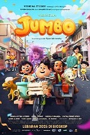

Jumbo
-
Genre : Animasi, Fantasi, Petualangan, Drama, Keluarga
Durasi : 1 jam 42 menit
Sutradara : Ryan Adriandhy
Aktor : Prince Poetiray, Den Bagus Satrio Sasono, Quinn Salman, Graciella Abigail, Yusuf Özkan, M. Adhiyat, Ratna Riantiarno, Bunga Citra Lestari, Ariel, Angga Yunanda, Rachel Amanda, Aci Resti.
Rating Usia : SU
8,2 / 10
Sinopsis
Don, seorang anak yatim chubby yang biasa dijuluki "Jumbo", menghadapi intimidasi di sekolah. Ketika buku cerita peninggalan orang tuanya hilang oleh teman, ia bertemu Meri, sosok peri kecil dari dunia lain. Keduanya memulai petualangan untuk menemukan buku itu dan membantu Meri reunian dengan orang tuanya, belajar arti sejati persahabatan, keberanian, dan kepercayaan diri